A mobile app which help groups of people picking restaurant and record their group activities
Design Problem
The biggest problem for groups of people hanging out is to pick a restaurant. Sometimes people don’t know which restaurants to go whereas sometimes people can not reach consensus on restaurants because of the so may choices. As a result, it is typically tedious and lengthy for groups of people to finalize the decision. In addition to restaurant selection, people generally want to record their groups’ history of activities. However, through the existing social media, for example Facebook, it is inconvenient for people to view the history of a group.
My Contribution
This is an individual project. My work included: brainstorming, sketching, competitive analysis,storyboard, paper prototyping, hi-fi prototype, user testing, persona.
Brainstorming
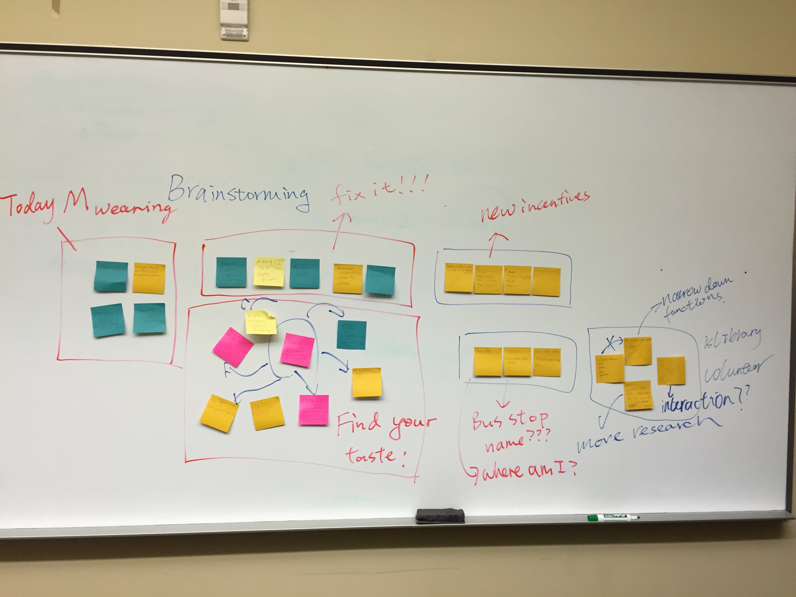
In order to solve the problem, I conducted a 40 minutes brainstorming session to come up with various of design solution.
Sketching
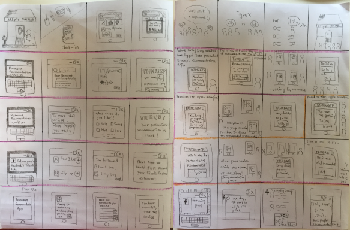
40 sketches of solution were drawn and based on these solution. I conducted Question Option Criteria (QOC) analysis to decide the final functions of the app which include poll to decide time and restaurant, recomendation of restaurant by following people who have similar tastes with users as well as a history page for a group to record thier activity history.
Persona
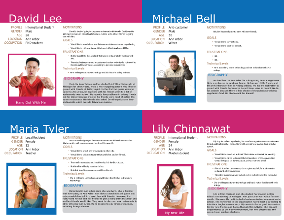
Paper Prototyping
In this version, the welcome page of the app are the search screen, which is similar to other food review website. There are fixed tabs at the bottom, including all main function, search, recommendation, groups and setting. When go to the group page, there are fixed tabs at the top, where users can vote for restaurants, time and see reviews of selected restaurants and add new places and time
Hi-Fi Prototype version 1
Prototype URL
After testing the paper prototype, the users’ feedback is that in the group page, there are too many interaction on the same screen, including the top navigation bar and the bottom navigation bar which make users confused (Figure 1). As a result, in this version of prototype, I removed the bottom bar and put these functions into a side bar, which allow users to tap on the hamburger menu and pop-out the side menus (Figure 2). Also users reminded me that the main function of this app is to help groups of people decide a restaurant, as a result, the welcome page should not be the search function but should be the users enrolled groups page. Thus, I changed the welcome page. In the groups page, users can click on the groups (green groups) which is currently hold a event. When going to the group’s profile page, they can see the ongoing event as well as members and the history of activity. Users can then click on each tiles to go to vote for time/restaurants or view group members and history. Also users can click on groups (yellow ones) which in not currently hold a event to create new event or view history and members. In the restaurant poll page, users can vote for the restaurants they like and add options, same interactions as the time poll page.
Final Prototype
Final Prototype URL
After testing, the users’ feedback are that in the poll page, they thought that the “add options” buttons functioned as submit button because it is located under the poll. Also they mentioned that the feedback of the interaction of before and after voting is not clear. As a result, I revised the wording of “add options” to “+” buttons and added a line to indicate that users can add new rows. And the background color of each selected options will also darken after users selected.
Another major change is the display of the event in group profile page. Users mentioned that they think one group can not only held one event, but can hold many events simultaneously. Also the group members and history tiles are related to the group, not to the event. Users recommend not to put them together because there are not in the same level. As a result, in the final design, I added fixed bottom tabs (events, history, members, create) in the group profile page.
The events in the events page will show events which are in progress. Users can tap on the events and then this will direct them to the poll page. I combined the restaurant poll and time poll together by a fixed tab bar (time, restaurant) at the top, which users can switch between them quickly.
Design Challenge & Reflection
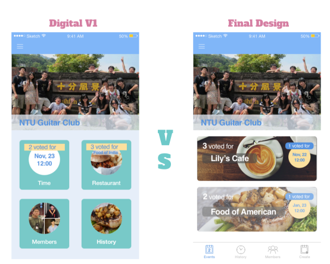
At first, I thought the first version of hi-fi prototype provides an intuitive interaction design, however, it mixed up the functions for the group and the events. As a reflection, I thought I can speed up the whole process if I wrote down the information hierarchy before designing the interface. This is the key takeaway I learned from this individual project.
Assistive Technology for Pregnant Women
A mobile app which help pregnant women manage their nausea and vomiting during the first trimester of pregnancy. This is the project for the CHI student design competition.
Problem
For pregnant women, nausea and vomiting (NVP) are the major problems of their pregnancy. Some pregnant women with serious sysmptoms even can not work during this period. One of the interviewee even said that if there is a technology can help releasing NVP systom, she will appreciate with it.
In this study, we first interviewed with 9 pregnant women to find out the major problems of thier preganacy. They reported that NVP symptons were the major problem of their pregnancy and about 80% of pregnant women would face this problem during their pregnancy. Through research, we discoverd that NVP symptom has regular symptom and health professions will recommend pregnant women to record thier NVP pattern as a result to better manage and predict their NVP.
Brainstorming
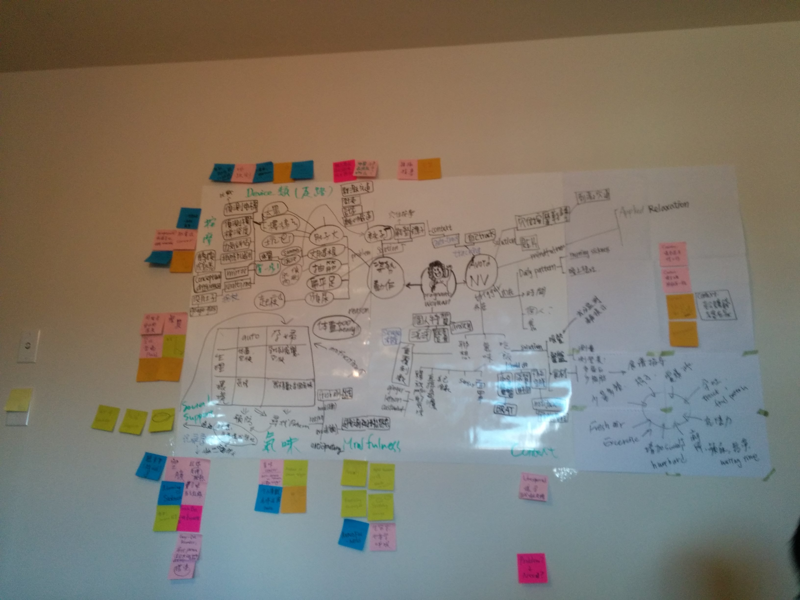
Through brainstorming, we decide to design a mobile app which help pregnant women record their NVP pattern and give them the information of their future NVP pattern based on the history recorded.
Design Guideline from Interview and Research
1. The task should be as simple as possible.
2. Prevent from animation which cause even worse nausea and vomiting
3. Do not directly inform pregnant women about nausea and vomiting.
Paper Prototype
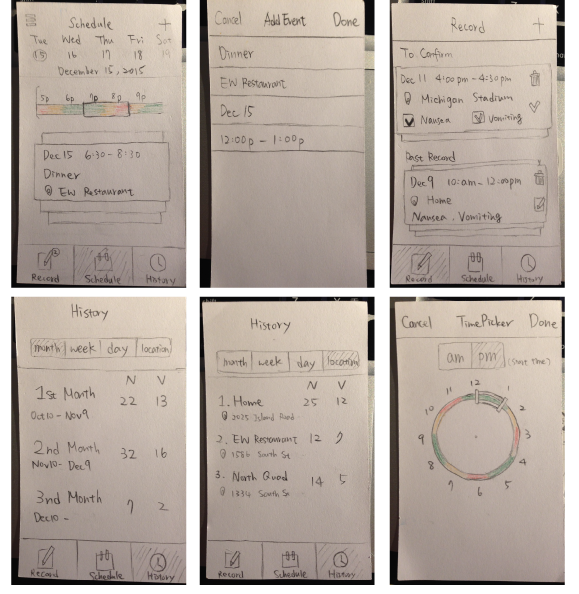
This is the paper prototype of the app, which includes three major screen, the history page, the record page and the schedule page.
To Be Continued
Reflection
This is an ongoing project which ends at Jan, 13, 2016. We have worked on this project for at least three months. One of the subject that is brought up the most during our discussions is that "Is our design solution creative?". We have done a lot of research and discussion on our final design solution to ascertain our design solve a real problem and is a creative solution. We have compared the pros and cons of different solutions we came up with and deleted unpractical solutions. This process iterated for several times and after each discussion session, we think even deeper in our design and clarify why we make certain design decision. This is what I have learned most in this project.
Social Minecraft
Collaboration with a startup which helps autism children improve their social skills via minecraft. We designed a website for the startup to visualize the progress of children and reported to their parents. As for the autism children, we design a page which allows children to view thier avatar and invite friends to the game.
The users are autism children. The website design should cater to their preferences. The design principle gathered from research and interview are followed.
Do not put too much information in one page.
The contrast between background and texts should not be completely white and black.
Give as many visual cues as possible.
Do not put animation or abrout audio in the website.
Brainstorming of Website Infrastructure
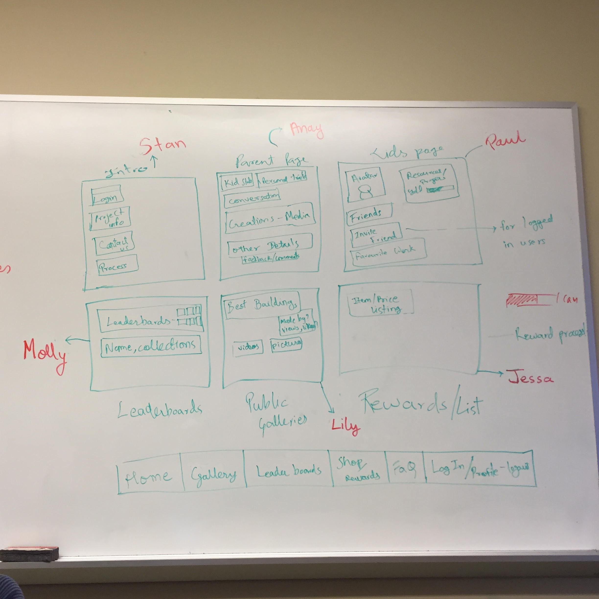
After knowing our clients' needs, we brainstormed the infrastructure of the website which includes home page, gallery, rules page, parents portal and children's page.
Paper Prototype
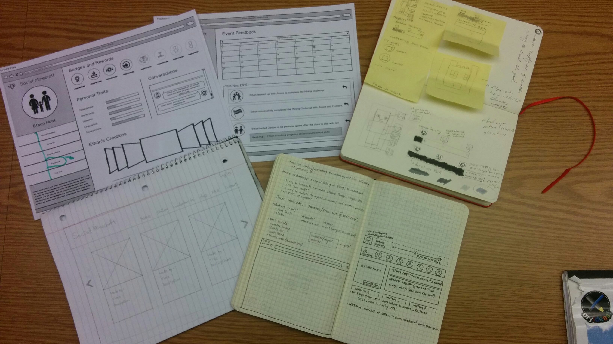
This is the paper prototype of the major screens of the website.
Hi-Fi Prototype for gallery page: Iteration 1
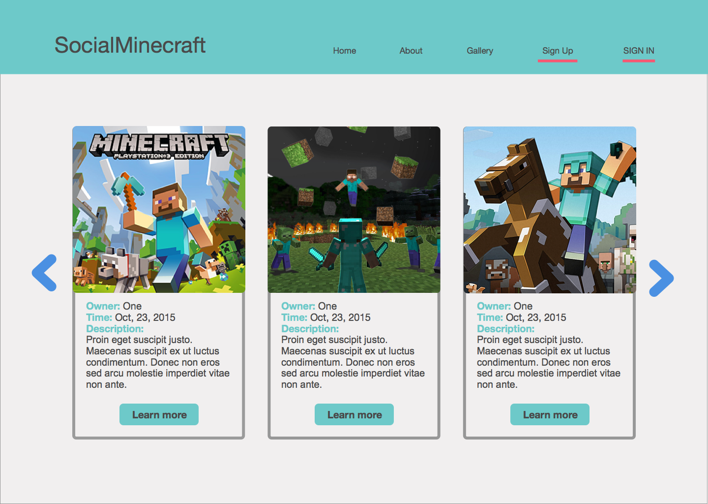
This is the first version of the prototype. The feedback of the clients is that the text description of the photos are redundant.
Hi-Fi Prototype for gallery page: Iteration 2
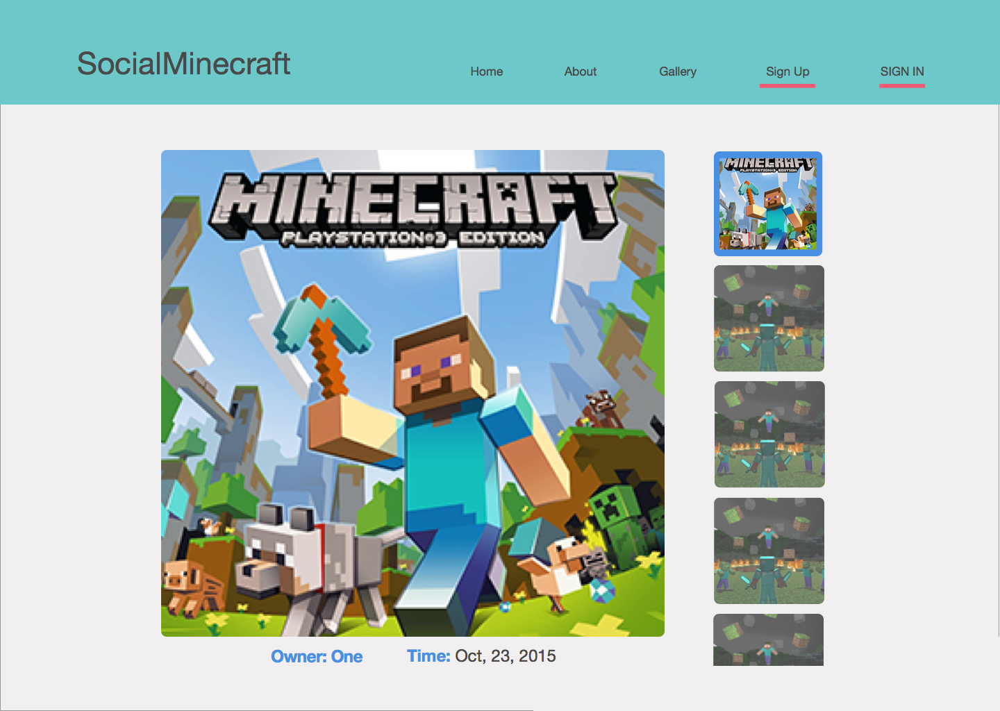
According to the client's feedback, this is the revision of the gallery page which was much more simpler. However, we still followed our design principle (don't show too much informatino in one page and give as many cues as possible), as a result, we only display four images in one page and design a half size image at the end as the visual cue for scrolling.
Kinect For Rehab
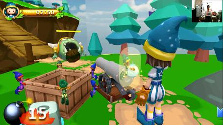
A novel rehabilitation game using motion sensing technology for children with motor impairments. It's a reserach project working with programmer, designer and health profession.
Design Problem
The exsiting treatments for children with cerebral palsy (CP) sometimes are tedious and repetitive. Thus children are easily getting bored druing therapeutic session. However, it is important for CP to practice more in order to recovery. This project is to design a rehabilitation game integrating playing and rehabilitation.
My Contribution
Literature Review, User Experience Research, Interview, Questionnaire Design.
Needfinding
In this study, we first design quesionniare to explore what types of activities would interest children with CP by interviewing children as well as caregivers. Since most of children with CP also have speech impairments, if the interviewed children can not answer the question, we will ask their caregivers. The results showed that children like games with multiple sensory feedback regardless of the games' genre.
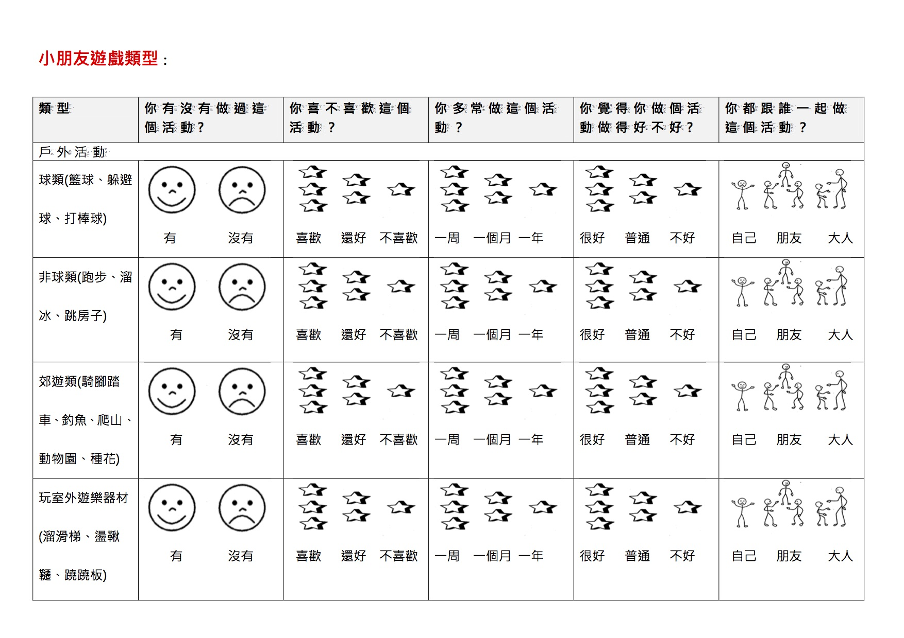
Our Design
After interviewing occupational therapists for the rehabilitation tasks that CP children commonly need to practice. We designed an adventure game which can help children to practice hand grasping and releasing. In the game, children have to first collect bombs and after finishing collecting bombs, they can attack monsters.